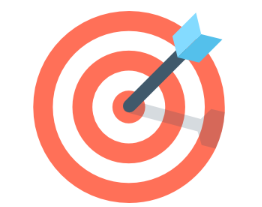

We Kanishka furnitures company are engaged in the manufacturing, Supplying and exporting a wide collection of metal/weought iron furnitures and accessories
Any company can make a good quality product for high price, or a poor quality product for a low price. But Kanishka furniture's puts all efforts to manufacture good quality products at low prices.
Profile:
We "Kanishka Furniture's" are reckoned as one of the trusted Manufacturers, Exporters, and Traders of a wide gamut of Stainless Steel and Wrought Iron Furniture. These are crafted using high quality material and are widely demanded by our clients. Further, these are acknowledged for the excellent finish, superior polish and exclusive design.
Our products are fabricated using high quality material and are known for the features like latest design, fine finish and durability. Further, we make sure that these are manufactured as per the latest market trends and keeping in mind the rich Indian tradition. Backed by a team of expert engineers and skilled workforce, we stand out in offering our clients a flawless range. In addition to this, we have employed a team of quality controllers who keep a stringent check on the parameters of quality so as to provide our clients with the zero defect range.
Product Portfolio
We are one of the leading Manufacturers and Traders of a wide assortment of Wrought Iron Furniture, Stainless Steel and Handcrafted Furniture products. These are manufactured using high quality material like iron, stainless steel which provides fine finish and durability to our products.
Some of the salient features of our range are as follows:
Exquisitely designed
Smooth and fine finish
Artistically crafted
Superior polish
OUR VISION
“We intend to be recognized as a market leading manufacturer of affordable modern furniture with durability.”

OUR MISSION
To provide superior furniture range for our customers through quality, innovation and personal commitment. To approach each customer interaction by first understanding their needs and then achieve by our well-trained professionals dedicated to maintaining our commitment to honesty and integrity.
OUR ESSENCE
At Kanishka Furniture's we operate on imagination, individuality, inclusivity and impact. We are ready to adapt to changing times and hence we have moved from manual methods of manufacturing to more advanced and mechanized way of manufacturing. Our artillary includes panel saw, single head and triple head multiple boring, manual edge banding, edge trimming, spindle moulder, post forming, cold press, membrane press, Homag Thru feed edge banding with corner rounding and Homag CNC boring for wood working. We also have hydraulic power shearing with pneumatic control, hydraulic brake press with pneumatic control, mechanical power shearing for plate cutting, power press, manual folding machine, screw bending machine, spot welding machine, powder coating plant, anti-rust treatment plant and MIG welding for our steel deparment.
OUR VIBE
At Kanishka Furniture's we create magic. We dream to achieve new goals, reinventing things that are possible everyday.
PLEASE CALL US ANYTIME
+91 9941460585
Address: 222, Rabindra Sarani, chennai – 700 001 tamilnadu, India.